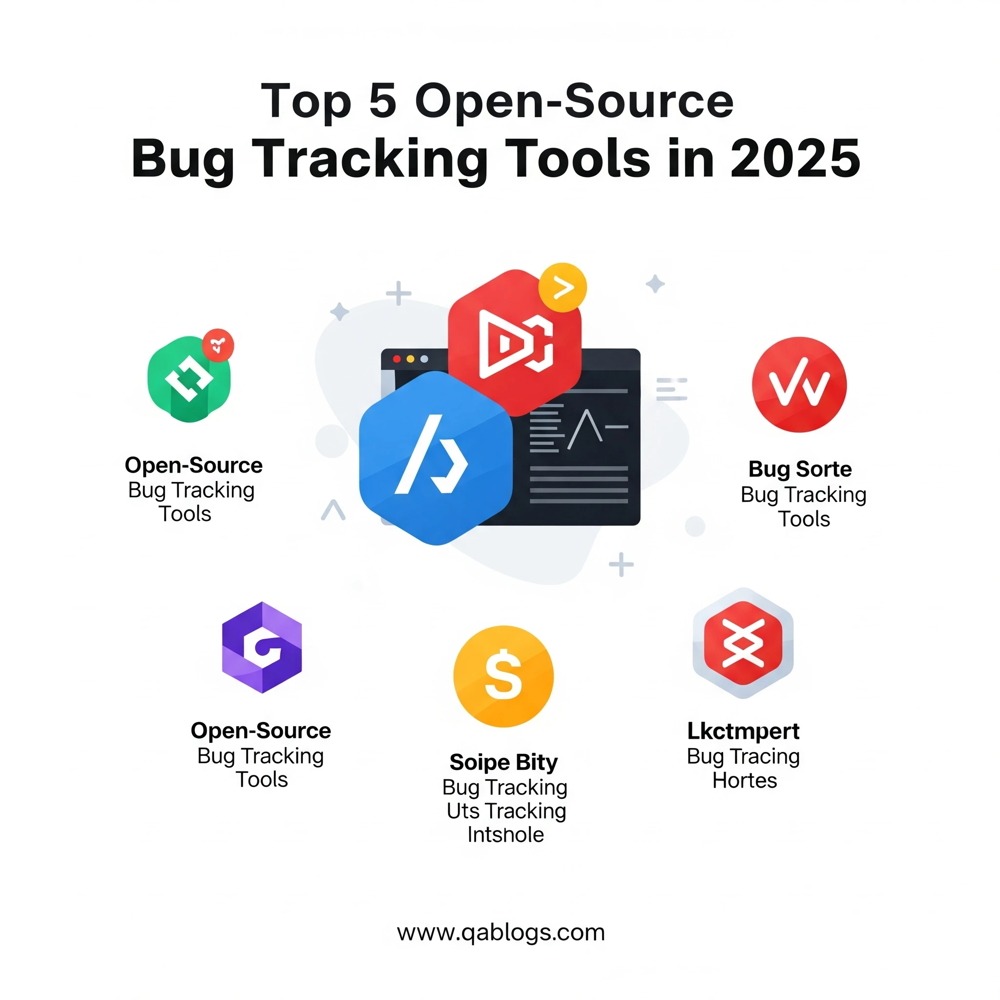

Top 5 Open-Source Bug Tracking Tools in 2025

Key Takeaways
- Open-source bug tracking tools offer cost-effectiveness, flexibility, and community support.
- Bugzilla remains robust for enterprises, while MantisBT is user-friendly for smaller teams.
- Redmine provides all-in-one project and bug management capabilities.
- Trac and Fossil are lightweight options, ideal for developer-centric and remote teams, respectively.
- Addressing challenges like dated UIs and limited support can be done through plugins and community resources.
In the fast-paced world of software development, bugs are inevitable, but managing them effectively is what separates high-quality projects from chaotic ones. For QA engineers, testers, and developers, bug tracking tools are the backbone of a streamlined quality assurance process, ensuring issues are identified, prioritized, and resolved efficiently. In 2025, open-source bug tracking tools have gained prominence for their cost-effectiveness, flexibility, and robust community support, making them ideal for teams of all sizes. With the global bug tracking software market projected to reach $601.64 million by 2026, open-source solutions offer a powerful alternative to premium tools. This blog post explores the top 5 open-source bug tracking tools for 2025, providing actionable insights for QA professionals to enhance their workflows and deliver bug-free software.
Why Open-Source Bug Tracking Tools Matter
Open-source bug tracking tools empower teams to customize workflows, integrate with existing tech stacks, and avoid the high costs of commercial solutions. These tools facilitate collaboration between QA engineers, developers, and product managers by providing centralized platforms to log, track, and resolve issues. In 2025, with 71% of development teams adopting agile methodologies, open-source tools align perfectly with the need for flexibility, scalability, and seamless CI/CD integration. Analogy: Open-source bug trackers are like a customizable toolbox—equipped with essential tools but adaptable to fit your team’s unique needs, from startups to enterprises. Let’s dive into the top 5 open-source bug tracking tools for 2025, selected for their features, ease of use, and relevance to modern QA challenges.
Top 5 Open-Source Bug Tracking Tools for 2025
1. Bugzilla
Purpose: Robust Defect Tracking
Bugzilla, a veteran since 1998, remains a cornerstone for enterprise-grade bug tracking, originally developed for the Mozilla project. Written in Perl, it offers a web-based interface with advanced search capabilities and customizable workflows.
Key Features:
- Advanced search with time-based and priority filters.
- Automated email notifications for bug updates.
- Time tracking and duplicate bug detection.
- Multi-product support for managing multiple projects.
Why QA Engineers Love It: Its flexibility and open-source nature allow teams to tailor it to specific needs, from small startups to large enterprises.
Real-World Example: A SaaS company used Bugzilla to manage defects across five product lines, leveraging its multi-product support to reduce resolution time by 30%.
Challenges: The interface feels dated, and setup requires technical expertise.
Solution: Use Bugzilla’s API for custom reports and pair with modern UI plugins to enhance usability.
2. MantisBT
Purpose: User-Friendly Bug Tracking
MantisBT, launched in 2000, is a lightweight, PHP-based bug tracker known for its simplicity and plugin ecosystem. It supports cross-platform deployment and includes a mobile version for on-the-go access.
Key Features:
- Customizable workflows and issue pages.
- Built-in wiki for documentation and knowledge sharing.
- Source control integration for traceability.
- Sponsorship tracker for community-driven prioritization.
Why QA Engineers Love It: Its intuitive interface and low setup time make it ideal for small to medium-sized teams.
Real-World Example: A startup used MantisBT’s wiki to document bug reproduction steps, cutting onboarding time for new testers by 25%.
Challenges: Limited advanced reporting compared to premium tools.
Solution: Integrate with third-party reporting tools like Grafana for enhanced analytics.
3. Redmine
Purpose: All-in-One Project and Bug Management
Redmine, built on Ruby on Rails, is a versatile open-source tool combining bug tracking with project management. It supports multiple projects, custom fields, and Gantt charts for comprehensive oversight.
Key Features:
- Issue tracking with custom workflows and role-based access.
- Time tracking and calendar views for project planning.
- Integration with Git and other version control systems.
- Email-based issue reporting for user convenience.
Why QA Engineers Love It: Its project management features make it a one-stop solution for teams needing both bug tracking and task management.
Real-World Example: A web development agency used Redmine to track bugs and manage sprints, improving delivery timelines by 20%.
Challenges: Outdated UI and complex self-hosted setup.
Solution: Host Redmine on cloud platforms like AWS or use community plugins to modernize the interface.
4. Trac
Purpose: Lightweight Issue Tracking
Trac, written in Python, is a minimalist issue-tracking system with integrated wiki and version control capabilities. It’s ideal for teams seeking simplicity and tight integration with development workflows.
Key Features:
- Wiki markup for issue descriptions and documentation.
- Timeline view for project events and milestones.
- Integration with Subversion and Git.
- Customizable workflows for defect management.
Why QA Engineers Love It: Its lightweight design and version control integration streamline bug tracking for developers.
Real-World Example: A small dev team used Trac to link bugs to Git commits, reducing traceability errors by 15%.
Challenges: Limited features for large-scale projects.
Solution: Pair Trac with external tools like Jira for advanced needs or use plugins for additional functionality.
5. Fossil
Purpose: Integrated Version Control and Bug Tracking
Fossil is a unique open-source tool that combines bug tracking, version control, and wiki functionalities in a single package. Its distributed architecture makes it ideal for remote teams.
Key Features:
- Distributed version control for seamless collaboration.
- Built-in bug tracker with ticket-based issue management.
- Wiki and forum for team communication.
- Cross-platform support with minimal setup.
Why QA Engineers Love It: Its all-in-one approach reduces tool sprawl, perfect for small, distributed teams.
Real-World Example: A remote startup used Fossil’s distributed system to track bugs offline, ensuring uninterrupted QA during connectivity issues.
Challenges: Less robust bug tracking compared to specialized tools.
Solution: Use Fossil for small projects or integrate with tools like Bugzilla for advanced defect management.
Comparing the Top 5 Open-Source Bug Tracking Tools
| Feature | Bugzilla | MantisBT | Redmine | Trac | Fossil |
|---|---|---|---|---|---|
| Primary Focus | Bug tracking | Bug tracking | Project & bug management | Issue tracking | Version control & bugs |
| Ease of Setup | Moderate | Easy | Moderate | Easy | Easy |
| Customization | High | High | High | Moderate | Moderate |
| UI Modernity | Dated | Moderate | Dated | Simple | Simple |
| CI/CD Integration | Strong | Strong | Strong | Strong | Moderate |
| Best For | Enterprises | Small teams | Multi-project teams | Dev-focused teams | Remote teams |
Analysis: Bugzilla and MantisBT excel in dedicated bug tracking, with Bugzilla offering enterprise-grade features and MantisBT prioritizing ease of use. Redmine is ideal for teams needing project management alongside bug tracking, while Trac and Fossil suit smaller, developer-centric teams with lightweight needs. For 2025, combining tools (e.g., Trac with Git integration) or using plugins can address specific gaps.
Challenges in Using Open-Source Bug Tracking Tools
Dated Interfaces
Tools like Bugzilla and Redmine often have clunky UIs, which can impact user adoption. Solution: To enhance usability, consider using modern plugins or hosting these tools on cloud platforms that offer updated frontends.
Setup and Maintenance of Self-Hosted Tools
Self-hosted open-source tools frequently demand significant technical expertise for both initial setup and ongoing maintenance. Solution: To mitigate this, teams can leverage managed hosting services or utilize Docker containers for easier deployment and management.
Limited Support
Unlike commercial solutions, open-source tools typically lack dedicated customer support. Solution: Users must rely on community forums, platforms like Stack Overflow, or discussions on social media (e.g., X) for guidance and troubleshooting.
Security Risks with Unmaintained Tools
Unmaintained open-source tools can pose significant security vulnerabilities. Solution: It is crucial to regularly update these tools and monitor security advisories from their respective communities to ensure data integrity and system security.
Practical Insights for QA Professionals
- Match Tool to Team Size: Use Bugzilla for large enterprises, MantisBT or Trac for small teams, and Redmine for multi-project environments.
- Integrate with CI/CD: Embed tools like Bugzilla or Redmine in Jenkins or GitLab pipelines to automate bug tracking in DevOps workflows.
- Enhance Accessibility Testing: Pair tools with axe-core to ensure EAA compliance by logging accessibility defects, critical for June 28, 2025, deadlines.
- Leverage Community Resources: Join Bugzilla or Redmine communities on X or attend TestCon Europe (October 21–24, 2025) for best practices.
- Monitor Updates: Regularly check for tool updates to maintain security and access new features like MantisBT’s plugin ecosystem.
Conclusion: Empowering QA with Open-Source Tools
In 2025, open-source bug tracking tools like Bugzilla, MantisBT, Redmine, Trac, and Fossil offer QA professionals cost-effective, customizable solutions to manage defects and deliver high-quality software. Whether you’re a startup seeking simplicity or an enterprise needing robust scalability, these tools provide the flexibility to align with agile and DevOps workflows. As the QA landscape evolves with AI-driven testing and stricter compliance requirements, adopting the right bug tracker is crucial for success. Ready to streamline your bug tracking? Explore these open-source tools today and share your experiences in the comments below. Follow QA Blogs on X for real-time updates or contact us for tailored QA advice. Let’s squash bugs and elevate quality assurance in 2025!
Join Our Community of QA Professionals
Get exclusive access to in-depth articles, testing strategies, and industry insights. Stay ahead of the curve with our expert-curated content delivered straight to your inbox.
Nikunj Mistri
Founder, QA Blogs
About the Author